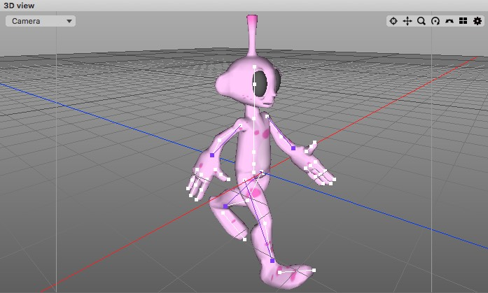

3D ビュー
3D ビューは、Cheetah3D ウィンドウの主な部分を構成しています。それは、シーンの OpenGL レビューを表示し、シーンの構成を編集するためのガイドライン、操作ハンドル、マトリックスをそれに補助的に表示します。

3D ビュー: ３つのオブジェクトと１つのライト（ライトが選択され、移動変形ツールの操作ハンドルが付いています。）

アクティブなカメラの位置と回転は3D ビュー上部の小さいアイコンバーを使って便利に変更する事ができます。これらのアイコン（での操作）はアクティブなカメラにのみ影響します。これらの機能は、左から順に:
-
- カメラの投影タイプを選択
- 様々なビュースタイルを選択（下を参照）
- 選択オブジェクト（または選択範囲）にフォーカス（訳注：オブジェクト・選択範囲が3D ビュー内におさまるようにカメラ位置を調整します。）
- カメラを上下左右に移動
- 視点方向に沿ってカメラをズームイン / ズームアウト
- 選択オブジェクトを中心にカメラを回転（下の訳注も参照してください）
- カメラを上下左右に回転
- 四分割画面に切り替え
カメラ位置 / 回転は、3D ビュー上でのキーコンビネーション + マウスドラッグでも変更する事ができます。（訳注：これらの設定は "Preferences" のマウスタブで設定します。）:
-
- １ボタンマウスの場合:
-
- alt + マウスドラッグ: 選択オブジェクトを中心にカメラを回転（下の訳注も参照してください）
- alt + command + マウスドラッグ: 視点方向に沿ってカメラをズームイン / ズームアウト
- alt + ctrl + マウスドラッグ: カメラを上下左右に移動
- alt + shift + マウスドラッグ: カメラを上下左右に回転（パーン）
- ３ボタンマウス（Maya）の場合:
-
- alt + 左マウスボタンドラッグ: 選択オブジェクトを中心にカメラを回転（下の訳注も参照してください）
- alt + 中マウスボタンドラッグ: カメラを上下左右に移動
- alt + 右マウスボタンドラッグ: 視点方向に沿ってカメラをズームイン / ズームアウト
（訳注：これ以外に３ボタンマウス（Mirai）タイプの操作も可能です。）
上部の "表示" メニューを使用して、3D ビューの OpenGL プロパティのいくつかを変更する事が可能です:
-
-
裏面を描画しない: OpenGL のバックフェースカリングの On/Off を切り替えます。On の場合、カメラに法線が向いていない面は描画されず、向いている面のみが描画されます。
- ワイヤーフレーム: シーン全体をワイヤーフレームで描画する場合、On に設定します。
- アンチエイリアス: グラフィックカードがサポートし、ライン描画のアンチエイリアスを有効にする場合、On に設定します。
- 両面をライティング: カメラに法線が向いている面だけでなく、すべてのポリゴンの両面をライティングする場合、On に設定します。
- グリッド: グリッドを描画する場合、On に設定します。
-
裏面を描画しない: OpenGL のバックフェースカリングの On/Off を切り替えます。On の場合、カメラに法線が向いていない面は描画されず、向いている面のみが描画されます。
3D ビュー内をクリックした時に、起こる事は現在アクティブな編集モードやツールに大きく依存しています。（現在アクティブなツール）これはツールビューで確認する事ができます。主に、オブジェクトの配置に3D ビューを使用するでしょう。（その場合には、オブジェクトブラウザからオブジェクトを選択し、移動変形ツールを選んで、上のイメージで示されている移動変形ツールハンドルの部品の１つをクリックしドラッグして調整します。）しかし、ポイントモード、エッジモードまたはポリゴンモードで作業するならば、あなたは3D ビューで編集するオブジェクトの選択部分をクリックするでしょう。（訳注補足：編集モードによって、3D ビュー上で選択できる対象が変わります。オブジェクトモードでは、3D ビュー上でオブジェクトブラウザリストの各オブジェクトを選択できますが、その他のモードでは、オブジェクトブラウザで選択されているオブジェクトの各パーツ（ポリゴン・エッジ・ポイントなど）が3D ビュー上での選択対象になります。）
クリック・ドラッグでカメラを回転させる事も可能です。Alt キーを押している場合、カメラは中心点を基準に回転します。（下の訳注を参照してください）
ノート
3D ビューの表示は、OpenGL を使用したプレビューなので、複雑なマテリアルプロパティのような、いくつかのより高度な機能は表示されません。これらの効果を見るためには、レンダラーを使用してシーンをレンダリングする必要があります。
訳注："選択オブジェクトを中心に回転" 使用時の動作について
それぞれのカメラには、内部的にカメラからの距離を示す隠しプロパティが設定されています。"選択オブジェクトを中心に回転" の動作時に、その回転の基準点は、選択オブジェクトの位置ではなく、カメラから視線をこの距離だけ伸ばした点が使用されます。オブジェクトブラウザでオブジェクトを選択した時に、このプロパティが自動的に設置されるわけではない事に注意してください。これを手動で設定するには、"選択範囲を見る" コマンドを使用します。これを使用すると、選択オブジェクト（または選択範囲）が3D ビューに収まるように表示されると同時に、カメラのこの隠しプロパティもその選択オブジェクト（選択範囲）の中心点になるように設定されます。